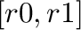
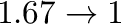

Next: String Processing Up: Built-in operations & functions Previous: General Purpose Functions =======
Next: Capabilities Up: User defined functions Previous: User defined functions >>>>>>> Graeber
| FUNCTION | DEFINITION |
acos |
Arc cosine of x expressed in radians. Interval 
(eg: acos(x)) |
acosh |
Inverse hyperbolic cosine of x expressed in radians. (eg: acosh(x)) |
asin |
Arc sine of x expressed in radians. Interval (eg: asin(x)) |
asinh |
Inverse hyperbolic sine of x expressed in radians. (eg:
asinh(x)) |
atan |
Arc tangent of x expressed in radians. Interval
(eg: atan(x)) |
atan2 |
Arc tangent of  expressed in
radians. atan2(x,y)) |
atanh |
Inverse hyperbolic tangent of atanh(x)) |
cos |
Cosine of cos(x)) |
cosh |
Hyperbolic cosine of cosh(x)) |
cot |
Cotangent of cot(x)) |
csc |
Cosecant of csc(x)) |
sec |
Secant of sec(x)) |
sin |
Sine of sin(x)) |
sinc |
Sine cardinal of sinc(x)) |
sinh |
Hyperbolic sine of sinh(x)) |
tan |
Tangent of tan(x)) |
tanh |
Hyperbolic tangent of tanh(x)) |
deg2rad |
Convert deg2rad(x)) |
deg2grad |
Convert deg2grad(x)) |
rad2deg |
Convert rad2deg(x)) |
grad2deg |
Convert grad2deg(x)) |
With Minsky's user defined functions, expressions can refer to Minsky variables accessible from the current scope (ie local Minsky variables will hide global variables), and also parameters declared as part of the function name. One can also call other user defined functions, which is the only way a user defined function with more than 2 parameters can be used. For 0-2 parameters, user defined functions can be wired into a Minsky computation. >>>>>>> Graeber
ExprTk identifiers (such as variable names and function names) consist of alphanumeric characters plus '_' and '.'. They must start with a letter. Minsky is reserving the underscore and full stop to act as an escape sequence, in order to refer to the full range of possible Minsky variable identifiers, including all unicode characters. This section will be updated once that feature is in place -- for now, please avoid using those characters in identifiers. <<<<<<< HEAD
=======